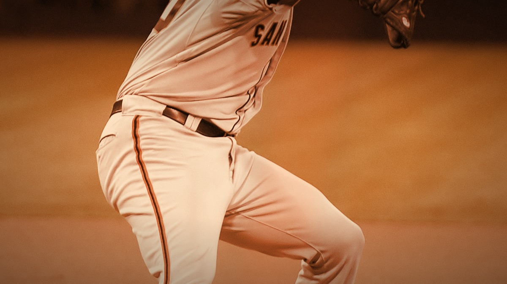
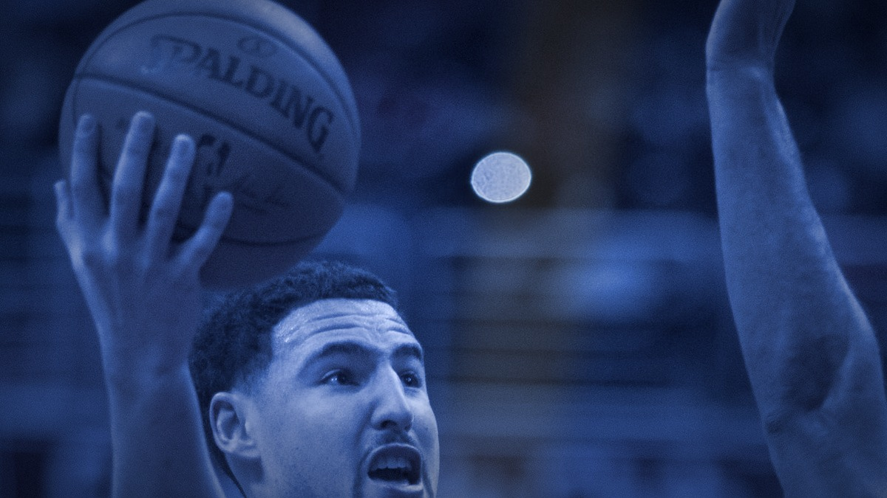

The single moments Bay Area fans never stop replaying. One play, one quarter, one October that we will be talking about forever.

A 0.43 ERA, a complete-game shutout, and five scoreless innings of relief on two days' rest to save Game 7. Photos, the clip, and the full recap.
January 10, 1982. Montana to Dwight Clark, 28-27 over the Cowboys, and the birth of the 49ers dynasty.

January 23, 2015. Nine threes, nine makes, and the most points in a quarter in NBA history.